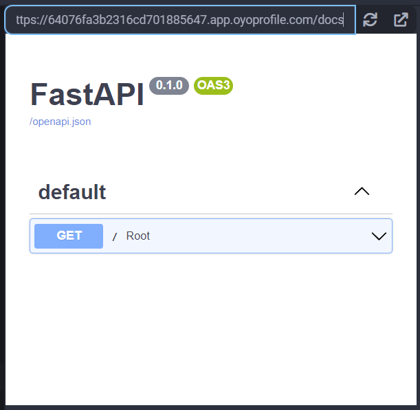
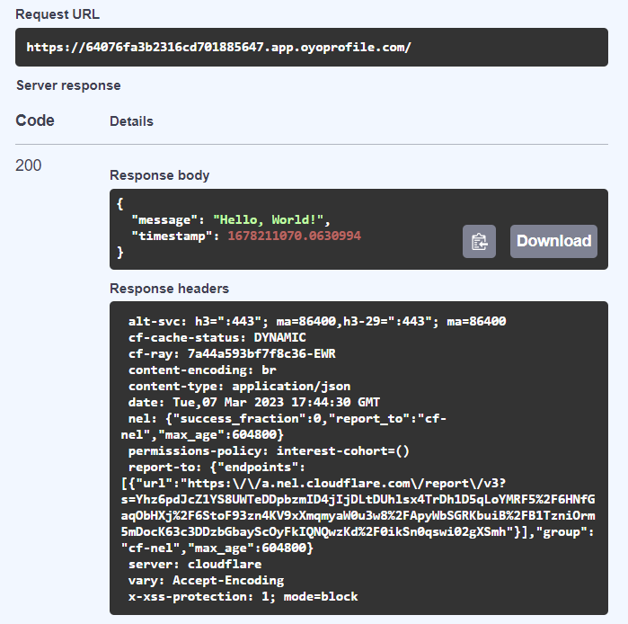

FastAPI
FastAPI is a web framework that's designed to help programmers create API quickly and cleanly while being self-documenting. It is based on Starlette. It's made to be easy to understand and ready for production releases and is currently being used in many real-world applications by major companies like Microsoft.
Note
Since FastAPI is built on Starlette, an ASGI web server is needed. We will be using Uvicorn in the following examples, so make sure you also add the Uvicorn library to your project before trying to run the example code.
Examples
Creating a Basic API
Let's create a simple "Hello, World!" API to get a feel for how FastAPI works:
import time
import uvicorn
from fastapi import FastAPI
app = FastAPI()
@app.get('/')
async def root():
return {
'message': 'Hello, World!',
'timestamp': time.time()
}
uvicorn.run(app, host='0.0.0.0', port=8000)
When run, we will get a window to a webpage that returns this:
{"message":"Hello, World!","timestamp":1678210725.4149153}
While not anything special by itself, we can see that FastAPI will automatically create a docs page we can access and test our APIs. We can see them if we navigate to the /docs endpoint in our app:

From this page, click on the Root dropdown, and then click on Try it out:

Then, when you click on the Execute button, you will get all your request's info presented directly in this window:

More Robust API Definitions with Python Typehints
FastAPI really shines when, and is designed to be used with, Python Typehints. Even though Python is a dynamically typed language where you don't need to assign a type (like str, int, and so on) to each variable when declaring them like Java. However, Python supports typehints, which is a tool for programmers to communicate what kind of variables functions are expecting and what they will return.
They are optional, but can help in creating easier to understand and maintainable code. Let's see how that works with FastAPI with this example:
import uvicorn
from fastapi import FastAPI
app = FastAPI()
INVENTORY = ['a', 'b', 'c', 'd', 'e']
@app.get('/inventory/{slot_index}')
async def read_item(slot_index: int):
try:
return {'ok': True, 'item': INVENTORY[slot_index]}
except Exception:
return {'ok': False, 'msg': 'Invalid index'}
uvicorn.run(app, host='0.0.0.0', port=8000)
When we visit a valid url like /inventory/4, we will get a page like this:
{"ok":true,"item":"e"}
The useful part comes when we look at the docs again. When we click Try it out for this new endpoint, it comes with an input for the slot_index argument, where we can easily try out many values in an easy-to-use interface:

If we try with an index of 5, we get this:

Argument Validation
We can use the Query object from FastAPI to specify a query argument, as well as put some constraints on it:
import uvicorn
from fastapi import FastAPI, Query
app = FastAPI()
@app.get('/paramtest')
async def read_item(q: str | None = Query(default=None, max_length=5)):
return {'echo': q}
uvicorn.run(app, host='0.0.0.0', port=8000)
Then, when we visit /paramtest?q=abcde, we get a page that shows this:
{"echo":"abcde"}
If we visit the docs and try to input a query that's too long, it will render an error message for us:

Reference
- FastAPI at tiangolo.com
- Python Typehints at docs.python.org